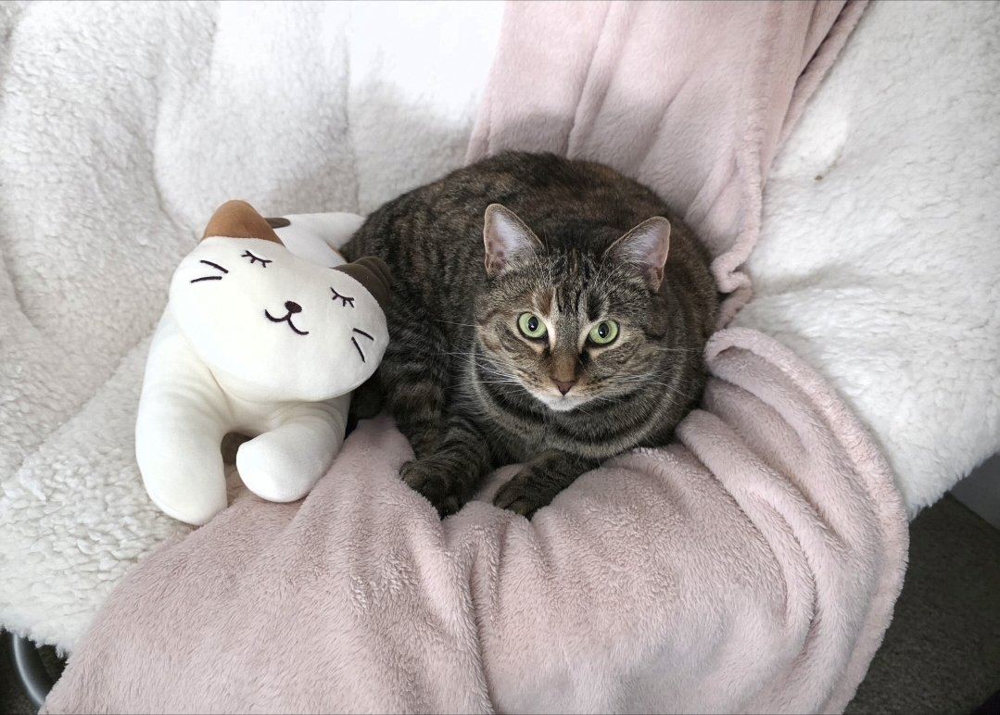

Alana Green | Ambitious Gecko

Hi! I am a senior studying Computer Science with a focus in data science. I enjoy getting to know people and making data look pretty through PowerBI and Python.
So far, it has been a joy to attend UNC Charlotte and take a few Japanese classes on the side as part of my politics minor.
I hope to one day study abroad while pursuing software engineering.
- Personal Background: Hi!! I’m from South Carolina and outside of computer science, I love fashion, cats, and Japanese. I used to travel a lot due to my parents being in the military, with my favorite place being Japan.
- Professional Background: This year marks the last semester of my senior year. Currently I work parttime at multiple Starbucks locations.
- Academic Background: Prior to transferring to UNC Charlotte, I attended Winthrop University in Rock Hill, SC. I have been on the chancellor’s list at least twice at each university.
- Background in Subject: Last semester, I was briefly introduced to HTML in my software engineering class.
- Primary Work Computer & Location: I use my portable microsoft pro 4 14 inch at home and at the university.
- Backup Work Computer & Location Plan: I use an alternative laptop at my house at home and at the university.
Courses:
- ITIS 3135 – Front-End Web Application Development: Sounds fun.
- ITCS 3153 - Intro to Artificial Intelligence: Sounds relevant as AI has been increasingly more prevalent
- ITCS 3156 - Intro to machine learning: Piqued my interest because it seems like a follow up of my data mining class as the course also deals with predictive machine learning models.
- ITCS 3190 - Intro to cloud computing: I see experience in cloud computing often appearing on internship qualifications, so I’m taking this to improve my resume and professional experience.
- ITSC 4155 - Software Development Projects: Required capstone project. So far I am loving the emphasis on collaboration.
I would also Like to Share: I am a mother of two beautiful standard issue cats.
“I’m whatever you want me to be, Lieutenant. A partner, buddy to drink with, or just a machine… Designed to accomplish a task.” — Connor, 2018